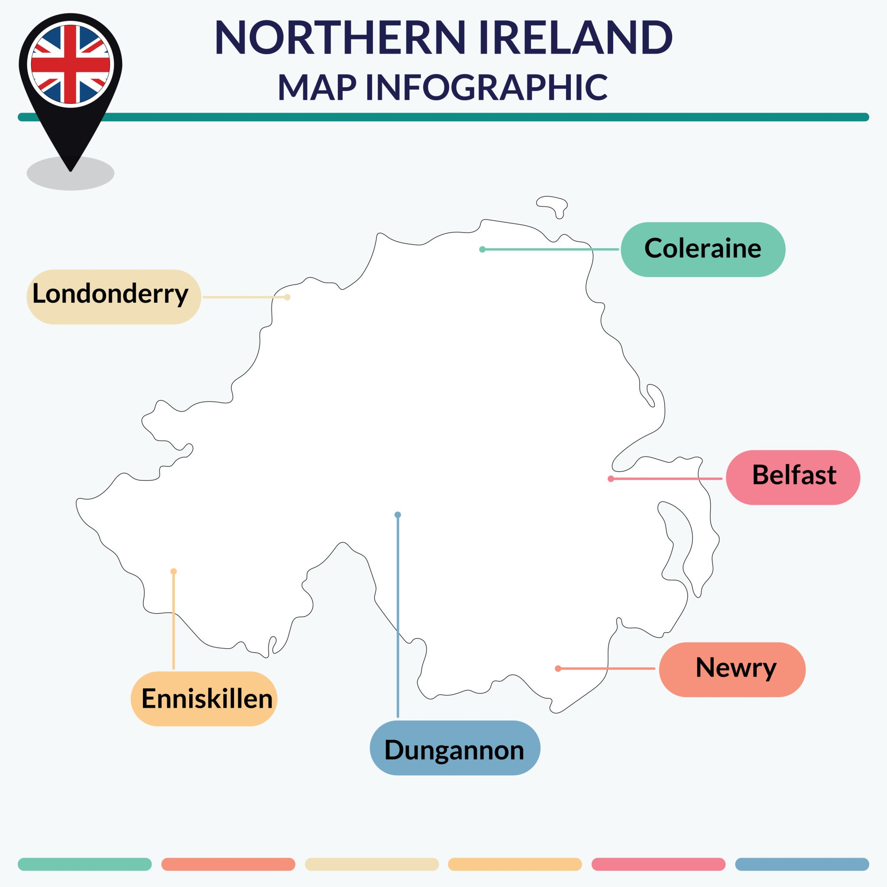

【思考分享】英国经济及脱欧二三事
一、从霸主到“欧洲病人”
- 昔日的荣光 (19世纪 - 20世纪初)
日不落帝国： 借助第一次工业革命，英国在维多利亚时代达到全盛。1870年虽本土GDP占比不高，但加上全球殖民地，占据了全球 1/4 的GDP。
由盛转衰： 第二次工业革命中，美、德、日崛起。两次世界大战彻底掏空了英国家底。
债务危机： 二战时国债占GDP比例飙升至 240%，欠美国的钱直到2006年才还清。
殖民地独立： 战后殖民体系瓦解，资源和市场大幅萎缩。
- 战后迷茫与“欧洲病人” (1950s - 1970s)
政策失误： 二战后英国忙于还债，且在美德推行自由市场时，英国选择了国有化，导致经济缺乏活力。
错失良机： 欧洲共同体（欧盟前身）成立初期，英国因傲慢及与美国关系亲密而拒绝加入。
艰难入群： 当英国意识到被孤立想加入时，两次被法国总统戴高乐否决。直到 1973年 戴高乐下台后才成功加入，却迎头撞上全球能源危机和高通胀。
二、撒切尔夫人与现代英国经济
1979年，撒切尔夫人上台，推行了被称为“撒切尔主义”的强硬改革：
核心措施： 供给侧改革、国企私有化、去监管、打击工会、控制通胀。
成果： 英国经济触底反弹，金融业（尤其是伦敦）迅速崛起成为全球第二大金融中心。
代价： 失业率一度飙升至 12%，社会矛盾加剧，但成功将英国推回自由市场经济轨道。
三、英国与欧盟
英国在欧盟中一直处于边缘和游离状态（若即若离）：
心理隔阂： 岛国思维，不愿被欧洲大陆同化（如保留英镑、不完全开放边界）。
导火索 (2010s)：
欧债危机： 英国觉得欧盟是个“累赘”。
难民危机 (2015)： 大量难民涌入欧洲，甚至引发恐袭，直接触动了英国人对移民和治安的敏感神经。人口密度过大（英格兰人口密度远超美国）加剧了排外情绪。
四、脱欧大戏：一波三折
- 卡梅伦的豪赌 (The Gamble)
为平息党内分歧和应对UKIP党（英国独立党）的威胁，卡梅伦承诺若连任将举行公投。
结果： 2016年公投，脱欧派以 52% : 48% 爆冷胜出。卡梅伦引咎辞职。
- 特蕾莎·梅的苦战 (The Struggle)
特蕾莎·梅（Theresa May）接手烂摊子，面临北爱尔兰边境问题（既要脱欧又不能设硬边界）和国内党派斗争。
困局： 协议在议会反复被否决，梅姨最终无奈辞职。
- 约翰逊的“快刀斩乱麻” (The Break)
鲍里斯·约翰逊（Boris Johnson）上台，通过重新大选拿下议会多数席位，强行通过脱欧协议。
时间点： 2020年1月31日正式脱欧，同年底完成过渡期。 
- 最终协议关键点：
贸易： 维持零关税（但有非关税壁垒）。
移民： 终止自由流动，英国实行积分制移民。
北爱尔兰： 特殊地位，货物进出大不列颠岛需检查，但与爱尔兰之间保持无硬边界。
五、总结：脱欧后的英国经济现状
尽管脱欧过程中的不确定性造成了巨大的经济成本（如企业外迁、投资搁置），但英国经济底子依然存在。
基本面：
GDP： 全球第五（约2.83万亿美元），人均4.1万美元。
结构： 服务业占比近 80%（金融、航空极其发达），工业占20%，农业仅不到1%。
贸易： 严重依赖进口，欧盟仍是其最大贸易伙伴。
挑战：
国内分裂风险（苏格兰寻求独立）。
脱欧后的长尾效应（劳动力短缺、贸易摩擦）。
债务因疫情和危机再次攀升。